Project Overview
A purpose for a career transition
With a background in Graphic Design and Marketing, I had always been drawn to UX/UI. After nearly six years in the field, including two as the lead of Social Media & Design at an IT company, I decided it was time to make the transition official. With the support of our Design Director, I was invited to present a project to the US design team board.
I spent an entire weekend brainstorming ideas for this project until, after missing a party I really wanted to go to, the answer hit me. It got me thinking about the old Facebook Events feature, where you could find local happenings, see who was going, and actually feel connected to what was around you. I missed that. And then I thought: what if Instagram had that?
Why Instagram?
Research
To back up my idea, I did some desk research. One stat stood out: in a 2023 survey with 1,033 Brazilian respondents, 64% already use social networks for online research, with Gen Z leading the shift away from traditional search engines.
If people are already living on Instagram, why not find their events there too? The research pointed to a clear opportunity: event discovery could become more natural if it lived inside a platform people already use daily.
Key insights
Fragmented information
Event information is scattered across different sources, making it harder for users to quickly understand what is happening around them.
Generic recommendations
Without personalization, users are overwhelmed by events that do not match their interests, location, or social circles.
Limited interaction
The absence of a dedicated social layer around events creates missed opportunities to plan with friends and meet new people.
Hypothesis
Proof of concept
From the research, two hypotheses emerged:
Consolidating event information into a single platform would increase community engagement.
Integrating interaction tools into event platforms would help attendees connect and reduce feelings of isolation.
To validate these hypotheses, I interviewed a small group of friends who are heavy Instagram users. Most expressed nostalgia for Facebook's event features and said they find it tedious to search for party accounts just to see what's happening on the weekends. I also used Instagram Stories' Questions feature to gather broader feedback from my followers, asking whether they missed having an events feature on the platform. The responses confirmed there was a real appetite for it.
Persona
A social explorer who wants events to feel easier to find
To better understand the target users, I created a persona that captured their goals, interests, and pain points, keeping their needs at the center of every design decision.
Luana Silva
24 years old · Graphic Designer · Sao Paulo, Brazil
"I love discovering new places and events, but I usually find out about them too late or through scattered accounts."
Context
Luana is a young creative professional who works as a graphic designer in a trendy agency. She is a heavy social media user and loves exploring the cultural scene of her city.
Interests
Going to parties, music concerts, and art exhibitions. Discovering unique experiences in the city and engaging with friends.
Pain
Event information is fragmented across multiple platforms, recommendations feel generic, and she often finds out about events too late.
Feature fit
Instagram Events · Discovery and planning
"If events were already inside Instagram, I wouldn't need to search through random profiles just to know what is happening."
Goals
Discover local events without searching across multiple platforms and stay connected with friends and the cultural scene in one place.
Need
A familiar place where events are easy to browse, save, share, and filter by interests, location, date, and social connections.
Why it helps
She is already on Instagram, recommendations can be based on who she follows, and she can see which friends are interested or going.
Creation Process
Designing events as a native Instagram experience
With Luana's needs in mind, the goal was to shape an events feature that felt familiar, social, and easy to use inside Instagram's existing behavior.
The concept is simple: make event discovery feel as natural as browsing stories or posts, while giving users better ways to find, save, share, and plan events with friends.
Easy Discovery
Help users find local events without jumping between different platforms, profiles, and external websites.
Personalized Filters
Let users filter events by location, date, type, and interests so recommendations feel more relevant.
Social Planning
Allow users to see who is interested, share events with friends, and coordinate plans more naturally.
Timely Updates
Keep users informed about saved events, changes, and reminders so they do not miss opportunities.
Save and Organize
Give users a simple way to save events and return to them when they are ready to decide.
Native Experience
Design the feature so it feels like part of Instagram, not a separate product inside the app.
Benchmarking
Before diving into design, I looked at what competitors were already doing, especially since most users mentioned Facebook with nostalgia.
I analyzed four mobile event experiences to understand discovery, search, location, categories, and social planning.

Ingresse 🇧🇷
Clean aesthetic, location-first discovery, and good usability for finding upcoming events.
Date and time are too small, making important event details easy to miss.

Sympla 🇧🇷
Strong search, clear categories, and trending events from the last 24 hours.
The interface feels crowded and could use clearer visual prioritisation.

Baladapp 🇧🇷
Manual location input and oversized highlights make the experience feel slower and cluttered.

Facebook 🇺🇸
Create Event, categories, and GPS-based recommendations support discovery and planning.
Userflow
Before jumping into wireframes, I mapped out the user flow to make sure every possible move had a clear path, for me and for the user.


Ideation
Low fidelity
This was my first project in Figma. I had taken a beginner's course, but I learn best by doing, so I jumped in. My Photoshop background helped with the basics, and the rest was trial and error.
Before even opening Figma, I sketched every wireframe on paper and tested it with 5 Instagram users to get early feedback.


Mid fidelity
With the sketches validated, I moved to Figma and built out the wireframes for both user flows, which made the jump to UI design a lot smoother.
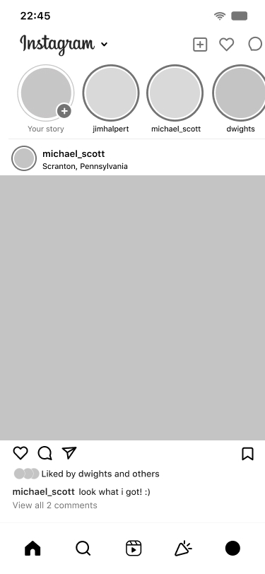
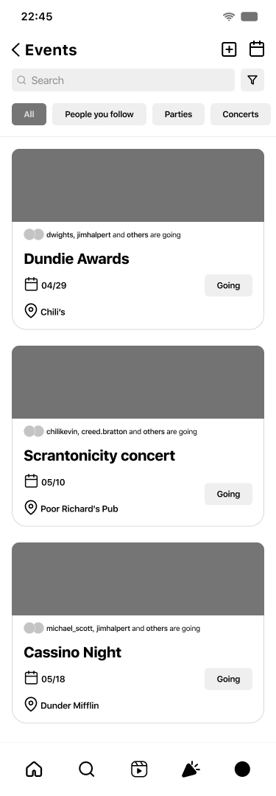
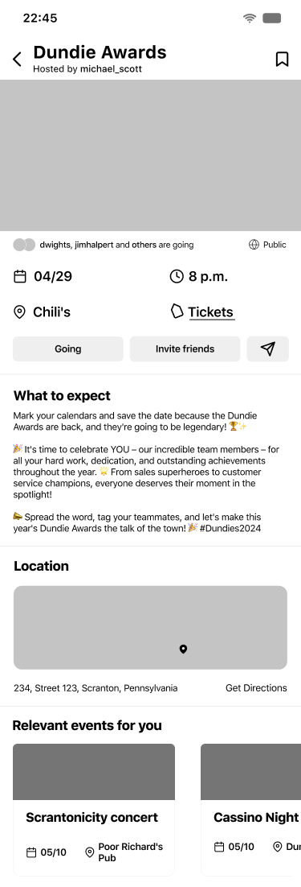
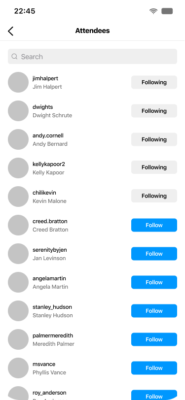
High fidelity
For the UI, I wanted it to feel as close to Instagram as possible, so I downloaded the font, icons, and used screenshots from my own account as reference. Once that was done, I decided to go a step further and build a full prototype, the brief didn't ask for one, but I'm a Virgo, so here we are. And since I'm a huge fan of The Office, I used the characters as the faces and names throughout the events. Obviously.
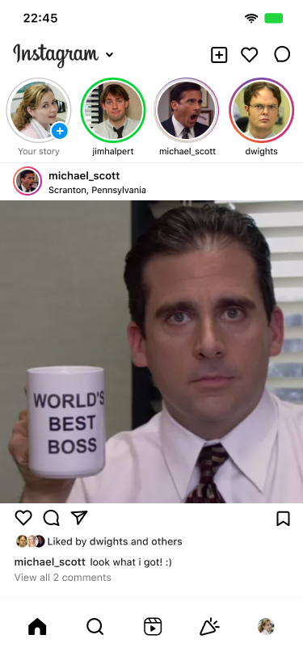
In this concept, Instagram's bottom bar features an Events button next to Reels.
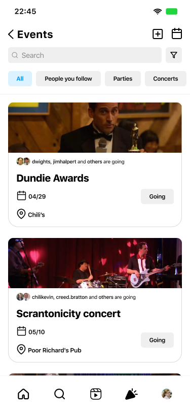
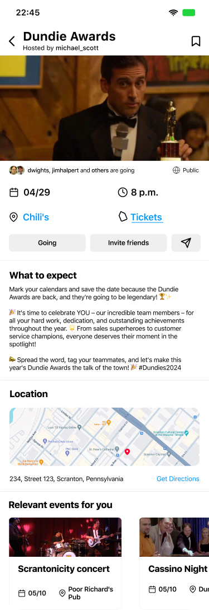
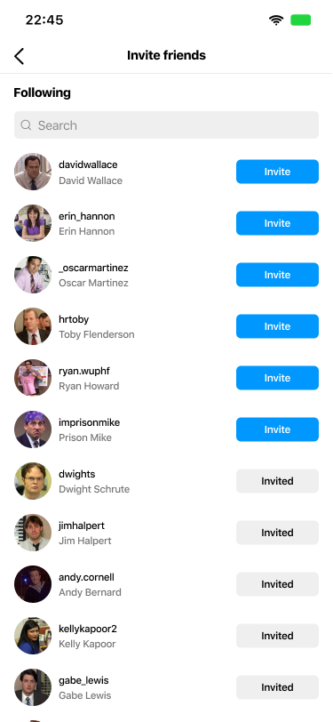
Find the best events for you with smart filters.
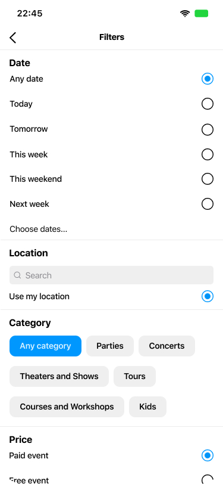
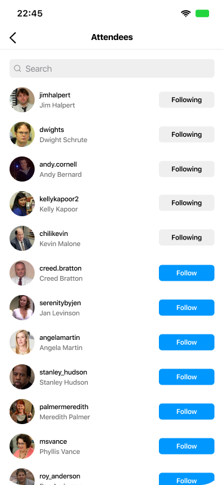
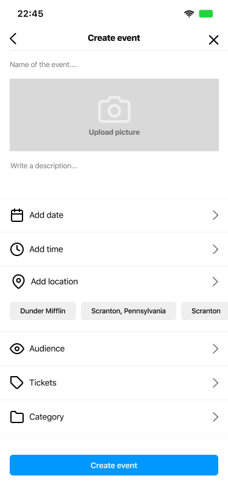
Share the event with your friends.
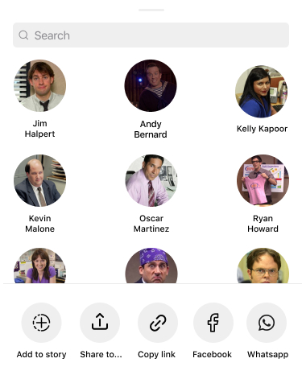
Prototype
Putting the design to test
Learnings
What this project taught me
This project taught me more than I expected. Reading design theory helped, but the real learning happened by doing: building flows, testing ideas, creating components, and adjusting the experience through feedback.
Even though the job position ended up being canceled, the feedback and lessons from those three weeks made me more certain that I want a long career in UX/UI.
A few key lessons stayed:
Learning happens by making
Building the feature from scratch helped me understand design decisions in a practical way, from structure and hierarchy to flows and components.
Empathy needs evidence
Talking to users and friends helped me move beyond assumptions and understand what people actually miss when trying to discover events.
Figma takes practice
I went from knowing very little to creating screens, components, and prototypes. Auto-layout was challenging, but it became part of the learning curve.
Feedback improves the concept
Every conversation added something new and helped shape a feature that felt more useful, familiar, and realistic inside Instagram.